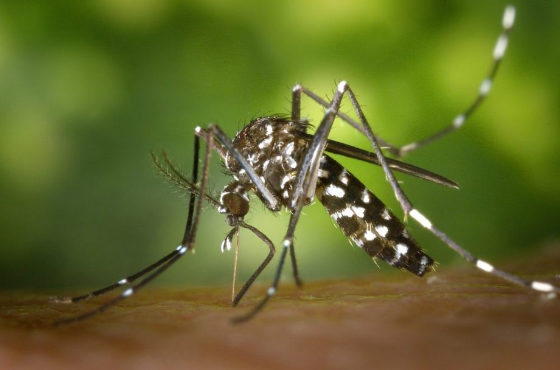
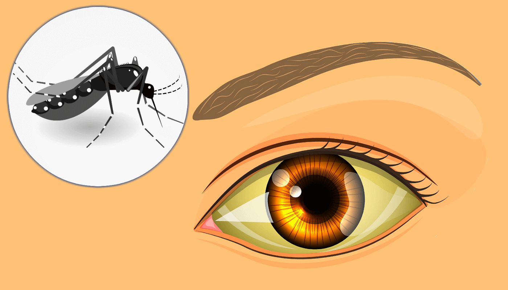
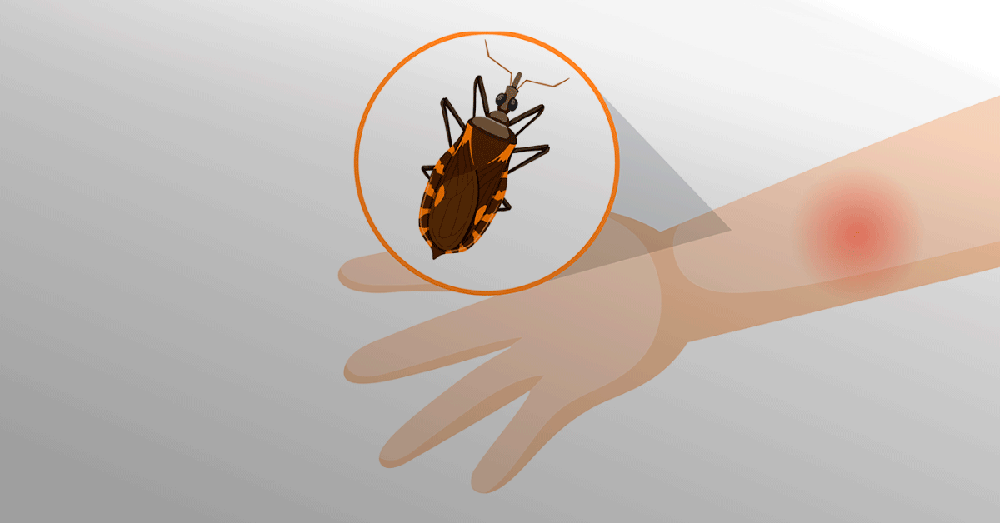
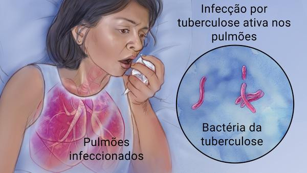

Súmario
O que são doenças endêmicas?
São doenças recorrentes em uma região específica, mas sem aumentos significativos no número de casos...
Quais são as doenças endêmicas mais comuns do Paraná?
Dengue
Classificada como arbovirose, seu vírus é transmitido pela picada de mosquitos das espécies Aedes aegypti...
Febre Amarela
Assim como a Dengue, a Febre-amarela também se classifica como uma arbovirose infecciosa febril aguda...
Doença de Chagas
A doença de Chagas, diferente da Dengue ou da Febre-Amarela, não é uma arbovirose, pois trata-se de uma infecção parasitária...
Tuberculose
Trata-se de uma doença infecciosa e transmissível causada pela bactéria Mycobacterium tuberculosis...
Hanseníase
A Hanseníase é uma dermatose infecciosa crônica que causa danos à pele e aos nervos causada pela bactéria Mycobacterium leprae...